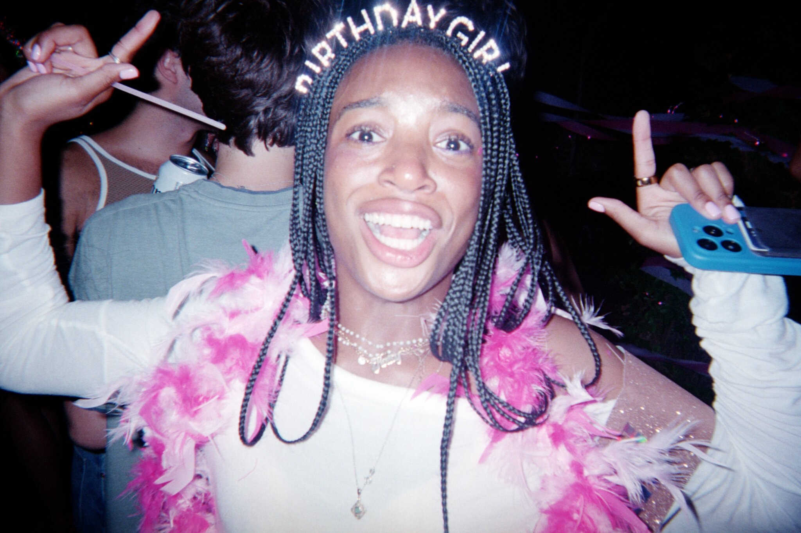
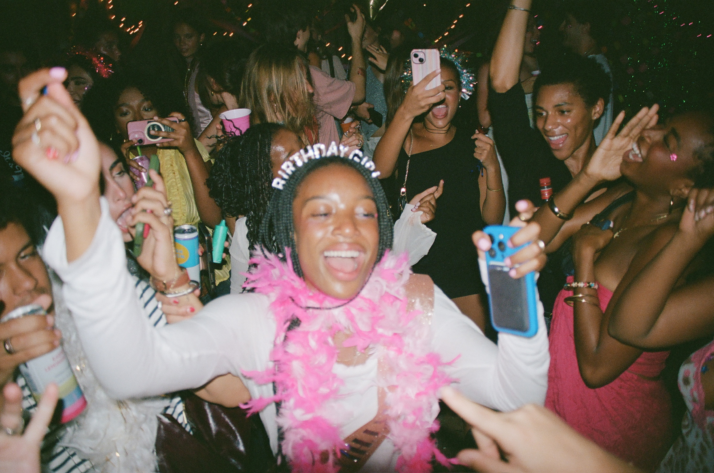
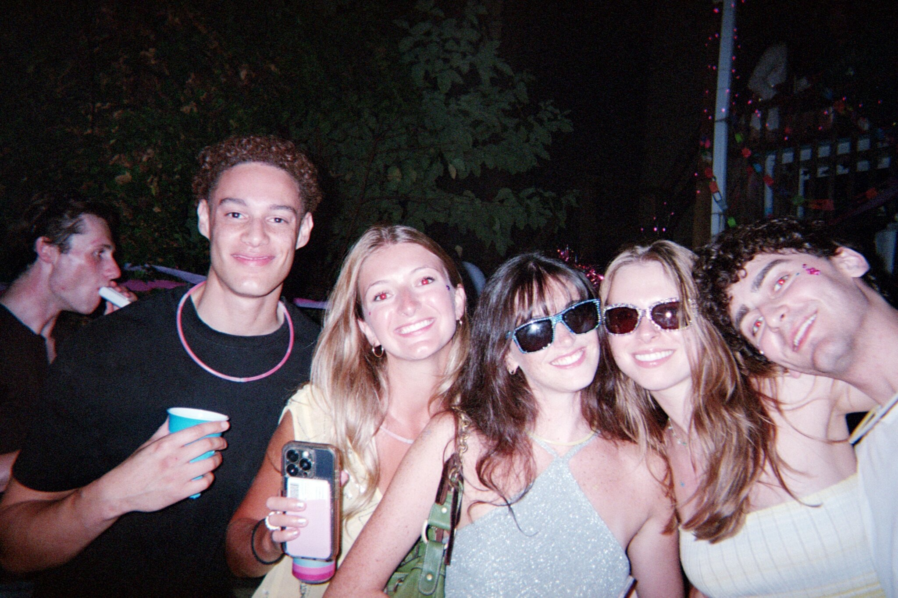
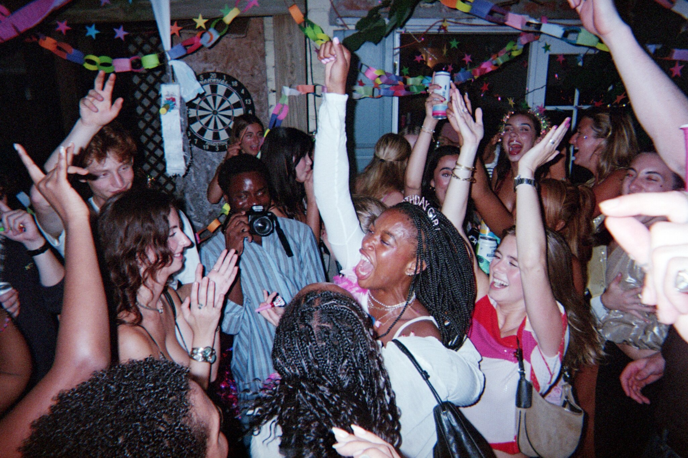
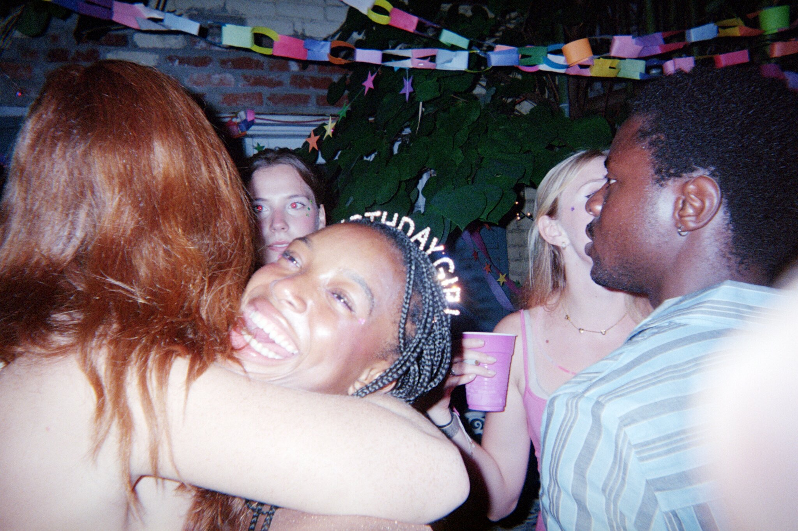

<!DOCTYPE html>
<html lang "en">

    <head>
        <meta charset="UTF-8">
        <meta name="viewport" content="width=device-width, initial-scale=1.0">
        <title>CC PARTY</title>

        <link rel="stylesheet" href="src/style.css">
    </head>
</html>

<body>
    
    <div class = "page-layout">

        <aside class="essay-title">
            PARTY 
        </aside>

        <main class="essay">
            
            <!-- VIDEO -->
            <section class="video-section">
            
                <video autoplay muted loop playsinline>
                    <source src="assets/videos/party1.mp4" type="video/mp4">
                </video>

                <video autoplay muted loop playsinline>
                    <source src="assets/videos/party2.mp4" type="video/mp4">
                </video>

            </section>

            <!-- ARTICLE & IMAGE -->
            <article id="essay-content">

            <section class="video-right">
            
                <video autoplay muted loop playsinline>
                    <source src="assets/videos/party1.mp4" type="video/mp4">
                </video>

            </section>

                <p>
                    I had found my way into being rather drunk, but the party more or less evacuated as if there was news of bad weather. 
                    The host, the person the party was hosted for, and all associated? Totally gone to the wind. 
                    I made it a point to take photos of the plates of uneaten cake scattered around the fold up tables, the unused red cups still remaining in sleeves found on the ground, 
                    and the collection of torn paper chains once used to decorate the enclosed Georgetown back patio. 
                    I walked through the sliding door into the basement and sat on the couch for a while looking at all the crushed cans and empty liquor bottles. 
                    A tenant of the house passed through the littered floor plus me without saying a word, an understanding that my being there was natural to the scene. 
                    I began rounding up my slightly spattered music equipment methodically, I knew now that I wanted to get out of there as soon as possible, not a second beyond what was required. 
                    I have a bad habit of sticking around in a setting longer than I should, leaving me plenty of opportunity to feel cosmically alone. 
                    It takes wisdom to know it’s best to not do this for good or bad. To not ruminate on any particular event but to cast it aside and move forward. 
                    Just another drop in the bucket. It was then that I heard them.
                </p>

                <blockquote class="quote">
                    “BRO WHERE THE FUCK ARE YOU? GET THE FUCK OVER HERE WE’RE SMOKING SUM FUCKIN’ GAS.”
                </blockquote>

                <figure class="image-left">
                    
                </figure>

                <p>
                    Evidently, two hopped-up white college kids of a Georgetown row home are calling up another (probably white) friend up on a third story balcony in Georgetown, Washington D.C. 
                    for the prospect of sparking up sum fuckin’ gas. Not very unremarkable. I went on packing quietly, stuffing cords into my backpack. I was almost packed when I heard the muffled beat- the muffled words. 
                    “What is that?” I made a run for the stairs to go up one floor towards them. My ears aren’t deceiving me. 
                    It’s something that you know happens, but also something that you’ll probably never find yourself around if you’re like me. 
                    It took me 23 years to get here. Two white college kids freestyle over some “type beat” in Georgetown, Washington DC. Now that’s very remarkable. 
                    I will have some things to say about this. It peaks my sardonic interest. I start my voicememo and raise it towards their floor appearing as if I’m trying for reception.
                </p>

                <blockquote class="quote freestyle">

                    <span>“IM GONNA TAKE FIVE-</span>
                    <span>SECONDS BEFORE I GET BACK TO WHERE I-</span>
                    <span>REMEMBER-REMEMBER,</span>
                    <span>GOOD TIMES THE BAD TIMES TOO</span>
                    <span>WHEN I WAS FUCKIN WITH SEVEN DUDES IN A CUBE...</span>
                    <span>REAL BIG DICK IT DOESN’T MAKE SENSE”</span>

                </blockquote>

                <p>
                    I laugh to myself. My god, where the fuck am I? How the fuck did I end up here? Why am I alone in this place? 
                    It’s the proximity that makes you ask such questions. To start, where the fuck am I? Well. 
                    You just DJ’ed a party, and these are the boys that the host of the party lives with and while there is no direct correlation between these boys and the host, 
                    actually I believe I was told that the host kind of hates these boys, it does stand for something, it stands for me being somewhere I should not. Amongst folk that I should not be amongst. 
                    How did I get here? Well, you were asked to be a DJ with no real pressure involved (or money) but there’s this idea in your head that you must do any gig that comes your way, to treat it all as a step in the right direction. 
                    This is you following through on that ideal. Okay heard. Now why are you alone? Well, you didn’t really invite anyone. 
                    You felt as if it might have been best to not invite all your friends who are a couple years older than you but a few years older than most of the partygoers here. 
                    26 means a lot when everyone’s 21 but it would’ve been nice to have my friends with me. One really is the loneliest number.
                </p>

                <figure class="image-right">
                    
                </figure>

                <p>
                    I was there early, I was setting up, and I was anxious. I made a big thing of it actually. The big deal was evident in the two hundred and forty eight dollar, 
                    thirty eight cent receipt burning a hole in my pocket for all the things I could potentially need, and didn’t. All for the sake of trying to give some goddamn well-executed entertainment. 
                    I was the DJ for a friend’s 21st birthday party with a few ulterior motives in mind. Besides making her birthday party everything she wants it to be, 
                    I myself have an epistemic curiosity for her college friends and acquaintances. Her and I are very different which brings different social circles, different social dynamics, 
                    and I can’t help but want to analyze every person I make contact with and make my assessments.
                </p>

                <p>
                    I didn’t go to college, hell I hardly went to high school. I chose to skip school most days to hang out with my girlfriend at the time, sitting in parking lots or sneaking into her home through her garage, 
                    often getting too full on whatever we cooked then having sex and watching One Piece til we passed out. It sounds ridiculous to say but I learned a lot of things in this time of my life. 
                    She was the first person to ever bring me inside of a “nice” home. I originally declined her offer to show me the house. “I’m good.” She was puzzled by that, and looking back I sort of am too, 
                    I find that I have lost a fair amount of unwillingness in my life. What I saw was spacious, that is to say there were rooms people weren’t sleeping in. Around Christmas, they put out a fake tree that sang songs. 
                    I loved that. I loved that there were no roaches. And we took a lot of baths- I don’t think there’s a bathtub I enjoy more than the one in her mother’s bathroom. 
                    The experience was as novel as when I discovered skipping school years earlier. That is why when I’m asked if I regret not going to college, if I regret not trying harder in that way, I honestly don&#x27;t know. 
                    I never really factored it in. I know I wasn’t exactly destined for it, not a single member of my immediate family had ever even been in a university. Hell, half of them didn’t even graduate high school. 
                    Back in the day,  my brother would often throw out a comment about the idea of him going to college, the important part of it being that he would just be the first to do it in our family.
                </p>

                <p>
                    So, that’s all college was to me and my brother, an idea that sounded nice because of who we are, but an idea that evidently didn’t stick. 
                    I’ve been the closest to getting there and all I did was a non-credited class for Screenwriting at Georgetown University. 
                    I long for the experience, the learning, and there’s some unfortunate edge that comes with envy, especially the kind that I have for college students who get to do that thing. 
                    The fuckers absorbing up all of that sweet, sweet knowledge. If there had to be a role to fill in my life I would say it’s a fucking teacher. My observations of the world aren’t enough. 
                    A lot of these kids had somebody imposing some sort of standard or expectation on ‘em but all I’ve ever done is cheat the system, because I just viewed the establishment that is school as a game. 
                    Which it sort of is if you went to public school. As long as it was A’s and B’s I was happy, but at the end of the day I wasn’t losing any sleep over attaining it and neither was my family. 
                    I began to fixate on other things. But life’s funny in the way that it just keeps giving you more ways to regret. “WE may be through with the past but the past is not through with us.” 
                    I mean fuck, why would I expect to be around so many college-educated folk anyways?
                </p>

                <figure class="image-left">
                    
                </figure>

                <p>
                    When my ex-girlfriend was doing a class on Music In Film, I couldn’t believe such a class existed. The guy was a total fucking nut too, he literally created his own language to describe many of the elements of Music In Film. 
                    Like symbols and everything, I mean it was so fucking up my alley it hurt. I did go to one class (blowing off work to do so) and I loved every bit. 
                    But to her it was just something on top of her already busy school schedule, I mean after all, she was a marketing major. 
                    And yes, I have enough brains to know that it isn’t as simple as making an interesting class your entire life to succeed in college. I know that. I’m sure it isn’t that that gets you to where you want to be. 
                    As a matter of fact I’m not so sure, but I do know that I probably would’ve enjoyed the opportunity to live totally obsessed with my interests. I sort of do that already. 
                    I feel that such a large portion of my day is geared towards sneaking off or at least “getting off” at work. I confess, I watch movies while I drive from job to job.
                </p>

                <p>
                    The envious feeling grows a little more and more with each year. It&#x27;s hard to believe at one point I thought I had it all figured out. To a lot of my family, I do. 
                    As for the college kids, most assume I’m one of ‘em I think. The unsuspecting eye wouldn’t notice my uneducated ass. But I’m aware of it influencing my view of their world and influencing the way their world could view me. 
                    My radar’s sharp in how oddly superficial and boring college students can be, as unfair as those senses are. 
                    Maybe I’m not attuned or immersed enough to be interested, or it could be plainly that I just don’t find enough of the jadedness that I have. Any group too spry is annoying. 
                    Many of them are ten times as fit, ten times as smart, ten times as educated and probably will achieve ten times what I will so pardon my sourness. 
                    I’ll chalk it up to their connections, if it’s not their connections, it’s their education I couldn’t afford, if it’s not that, 
                    well what can I say besides that maybe they just don’t really know what the world is all about. 
                    I speak for a whole group of uneducated numbskulls, some of which are my best friends.
                </p>
                
                <figure class="image-right">
                    
                </figure>
                <p>
                    In the deepest part of me, I know amongst these partygoers there are some genuinely interesting and likable people I’m hoping to meet. I would like to impress upon these few that I can do this shit. 
                    She says I’m doing her a favor but in my mind, it’s really a favor to me. I’m sure this could be apparent to her, but I’m not sure she would even think twice about it. 
                    To be honest, I wouldn’t be able to DJ any show besides this. The condition of my self worth feels contingent on this event. 
                    Can you imagine the reeking smell of my low self-esteem as I’m frantically setting up? Gross thoughts circle my head like flies while I’m running cables to and fro. 
                    Thinking all this airy shit about how music speaks about who I am. To me, it’s jolie-laide, it’s whatever song sounds good after whatever song. 
                    It’s a really trashy soundcloud remix of Throw Dem D’s after Ladies with an attitude by the sound chalk makes, after Topanga. 
                    It’s my taste and I&#x27;m not sure if it’s acquired or bad or just not interesting, but it’s it, and I hope to be liked for it. 
                    This deeply insecure piece of me longs for this imaginary person to think the mixing of my music as appreciable, tasteful. 
                    I wish for the “YOU KNOW WHAT? I WOULD HAVE NEVER THOUGHT THOSE TWO TRACKS WOULD WORK TOGETHER BUT THEY REALLY DO\!\!\! AND NOW MY BODY MUST CONVULSE UNTIL IT STOPS.”
                </p>

                <p>
                    That’s how I approach live music that I like, if it’s familiar or not, so take it as just a projection. 
                    If you’d like, (because you have never heard anything I’ve ever mixed and maybe never will) you could assume I’m slightly narcissistically delusional about the whole thing. 
                    I listen to my mixes more than anyone, and my brother is my biggest supporter. But yes, you’re right in thinking I’m desperate for that right energy coming from this vague “other”. I wish I were kidding, 
                    I wish it wasn’t this deep, it’s sickening for me. I guess what I’m saying is that I’m looking for people who care enough to listen to the quality of these things. 
                    I remember vividly the first time I heard a DJ play a set that I genuinely, with my whole body, liked. It was an interesting alternative reggaeton selection with good mixing that just blew me away. 
                    I couldn’t believe they weren’t surrounded with people losing themselves, busting their moves on beat, and in that same thought I was already swarming them, screaming over the music “HEY WHO ARE YOU?” so ignorantly, 
                    not realizing what it takes to keep that flow that I was so in awe of. Now I’m not asking for the latter part of the story, the swarming, the adoration, actually I’m not asking for anything, 
                    but there’s this weak, insecure part of me that hopes when I DJ, people will open their ears to potentially feel what I felt in that anecdote.
                </p>

                <figure class="image-left">
                    
                </figure>

                <p>
                    I remember before it started feeling unbearably out of my body as Katia and her friends arrived, thinking only about how unnatural I felt. 
                    At some point I was standing in the basement with one of her friends getting a beer to calm some nerves and I didn’t have anything to say so I asked her advice on how I should open a box of Modelos to pull one out so as to not inconvenience the person after me. 
                    Such a little thing but in retrospect it’s ridiculous how much strain I put on doing things to not elicit any form of complaint especially in lieu of all my constructed distaste for the people of the party. 
                    Besides that, the party’s fridge was stocked. I started playing around 9:00 and I made it a point to not be too inebriated. I had gotten too drunk at the last event I played, this bug-themed college house-party about two months ago. 
                    I remember the shared feelings of anxiety about the party from the host, which left us pregaming in the backyard playing catch, taking a shot whenever one of us dropped the ball. It left me piss-drunk 5 minutes into my set. 
                    It just so happened that luck was in my favor, the cops showed up about 10 minutes in which basically meant music was no longer an option.
                </p>

                <p>
                    So for this event, I was mostly sober and basically isolated (I was situated in a balcony above the party) which worked to my benefit and made my disposition much more palatable. 
                    I think I would’ve revealed myself as the most dishonest member of the party if anyone tugged at any genuine feeling of mine. I imagine this is what club dj’s who have any kind of artistry might feel. 
                    I watched the incoming crowds huddle in the alley and kind of worried about my truck parked there off and on. People would come up the stairs and want to chat and I kept myself pretty fixated on the laptop and dj board. 
                    “Huh? What?” Like an autistic child I just kept my eyes glued to the thing in front of me. I wasn’t locked in on the music as much as I was trying to disassociate through it. 
                    I had realized that the crowd was easily entertained and it had everything to do with playing what they wanted to be played. There was no room for art. Only for pandering to the needs i.e what was expected of me anyways. 
                    The only time I pandered and I felt right about it was for a show at a Mexican restaurant. Two middle-aged black women sat in the corner and pulled me aside before I got on the decks. 
                    She asked if I could play a particular Tamia song and to be honest, I didn’t know it. She looked at me and wrote me off, which was why I did everything I could to get in my bag to show all my R\&amp;B. 
                    We sang Donnell Jones together. They bought me a beer.
                </p>

                <p>
                    And so yeah, as far as I know everyone loved it. “The music was perfect” is what I was told. I on some level was glad to make everyone happy. But I walked away with this feeling. 
                    I was approached a few times by Katia throughout the party letting me know that I should go socialize, to schmooze with any of the folks here would mean the potential for me to DJ at whatever other function they would have going and that their wallet’s permit. 
                    And I would do it, I would download the playlist, I would talk shit on the mic to get everyone hyped, I would do to an extent everything they wanted. In the same way that I do everything that is asked of me at my day job. 
                    The American in me tells me that I’m just a whore that needs to be paid. But I realize now there’s also something in me that won’t let me ignore what I truly want. 
                    Going back in my mind I find it’s the boys on that balcony who gave me the answer. I want what they have. 
                    I find much more joy in sitting with someone mixing or making whatever god awful blend of music we like just because one of us fucking likes it and that’s just it. 
                    To not sell ourselves for any of the money, for the power, for the respect. To embrace who we are, to not compensate. I want to share these things. 
                    I want to be shared with. Let us dance until our heart’s stop, call it a call for community.
                </p>

            </article>

        </main>
    </div>
</body>